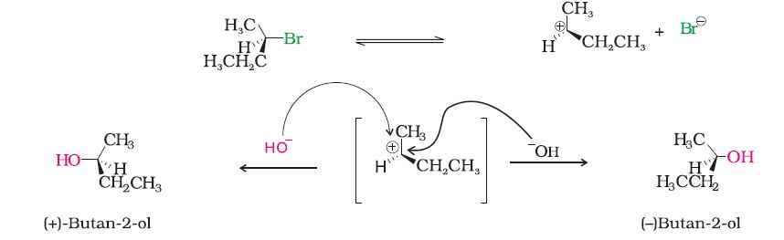
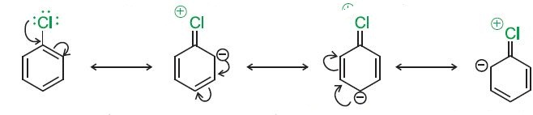

(i) Nucleophilic substitution
(ii) Elimination reactions
(iii) Reaction with metals.
(i) Nucleophilic substitution reactions
It is one of the most useful classes of organic reactions of alkyl halides in which halogen is bonded to sp3 hybridised carbon. The products formed by the reaction of haloalkanes with some common nucleophiles are given in Table 10.4.
Table 10.4: Nucleophilic Substitution of Alkyl Halides (R–X)
 , i.e., linking through carbon atom resulting in alkyl cyanides and through nitrogen atom leading to isocyanides. Similarly nitrite ion also represents an ambident nucleophile with two different points of linkage . The linkage through oxygen results in alkyl nitrites while through nitrogen atom, it leads to nitroalkanes.
, i.e., linking through carbon atom resulting in alkyl cyanides and through nitrogen atom leading to isocyanides. Similarly nitrite ion also represents an ambident nucleophile with two different points of linkage . The linkage through oxygen results in alkyl nitrites while through nitrogen atom, it leads to nitroalkanes.
Example 10.5 Haloalkanes react with KCN to form alkyl cyanides as main product while AgCN forms isocyanides as the chief product. Explain.
Solution
KCN is predominantly ionic and provides cyanide ions in solution. Although both carbon and nitrogen atoms are in a position to donate electron pairs, the attack takes place mainly through carbon atom and not through nitrogen atom since C—C bond is more stable than C—N bond. However, AgCN is mainly covalent in nature and nitrogen is free to donate electron pair forming isocyanide as the main product.
Mechanism: This reaction has been found to proceed by two different mechanims which are described below:
(a) Substitution nucleophilic bimolecular (SN2)
As you have already learnt in Section 12.3.2 of Class XI, the solid wedge represents the bond coming out of the paper, dashed line going down the paper and a straight line representing bond in the plane of the paper.
This can be represented diagrammatically as shown in Fig. 10.2.
Fig. 10.2: Red dot represents the incoming hydroxide ion and green dot represents the outgoing halide ion
In the year 1937, Edward Davies Hughes and Sir Christopher Ingold proposed a mechanism for an SN2 reaction
It depicts a bimolecular nucleophilic displacement (SN2) reaction; the incoming nucleophile interacts with alkyl halide causing the carbonhalide bond to break while forming a new carbon-OH bond. These two processes take place simultaneously in a single step and no intermediate is formed. As the reaction progresses and the bond between the nucleophile and the carbon atom starts forming, the bond between carbon atom and leaving group weakens. As this happens, the configuration of carbon atom under attack inverts in much the same way as an umbrella is turned inside out when caught in a strong wind, while the leaving group is pushed away. This process is called as inversion of configuration. In the transition state, the carbon atom is simultaneously bonded to incoming nucleophile and the outgoing leaving group and such structures are unstable and cannot be isolated. This is because the carbon atom in the transition state is simultaneously bonded to five atoms and therefore is unstable.
Hughes worked under Ingold and earned a D.Sc. degree from the University of London
Since this reaction requires the approach of the nucleophile to the carbon bearing the leaving group, the presence of bulky substituents on or near the carbon atom have a dramatic inhibiting effect. Of the simple alkyl halides, methyl halides react most rapidly in SN2 reactions because there are only three small hydrogen atoms. Tertiary halides are the least reactive because bulky groups hinder the approaching nucleophiles. Thus the order of reactivity followed is: Primary halide > Secondary halide > Tertiary halide.
Fig.10.3: Steric effects in SN2 reaction. The relative rate of SN2 reaction is given in parenthesis
(b) Substitution nucleophilic unimolecular (SN1)
SN1 reactions are generally carried out in polar protic solvents (like water, alcohol, acetic acid, etc.). The reaction between tert-butyl bromide and hydroxide ion yields tert-butyl alcohol and follows the first order kinetics, i.e., the rate of reaction depends upon the concentration of only one reactant, which is tert- butyl bromide.It occurs in two steps. In step I, the polarised C—Br bond undergoes slow cleavage to produce a carbocation and a bromide ion. The carbocation thus formed is then attacked by nucleophile in step II to complete the substitution reaction.
Step I is the slowest and reversible. It involves the C–Br bond breaking for which the energy is obtained through solvation of halide ion with the proton of protic solvent. Since the rate of reaction depends upon the slowest step, the rate of reaction depends only on the concentration of alkyl halide and not on the concentration of hydroxide ion. Further, greater the stability of carbocation, greater will be its ease of formation from alkyl halide and faster will be the rate of reaction. In case of alkyl halides, 30 alkyl halides undergo SN1 reaction very fast because of the high stability of 30 carbocations. We can sum up the order of reactivity of alkyl halides towards SN1 and SN2 reactions as follows:
For the same reasons, allylic and benzylic halides show high reactivity towards the SN1 reaction. The carbocation thus formed gets stabilised through resonance (Unit 12, Class XI) as shown below:
For a given alkyl group, the reactivity of the halide, R-X, follows the same order in both the mechanisms R–I> R–Br>R–Cl>>R–F.
Example 10.6
In the following pairs of halogen compounds, which would undergo SN2 reaction faster?
Solution
It is primary halide and therefore undergoes S Solution N2 reaction faster.
As iodine is a better leaving group because of its large size, it will be released at a faster rate in the presence of incoming nucleophile.
Example 10.7 Predict the order of reactivity of the following compounds in SN1 and SN2 reactions:
(i) The four isomeric bromobutanes
Solution
(i) CH3CH2CH2CH2Br < (CH3)2CHCH2Br < CH3CH2CH(Br)CH3 < (CH3)3CBr (SN1) CH3CH2CH2CH2Br > (CH3)2CHCH2Br > CH3CH2CH(Br)CH3 > (CH3)3CBr (SN2)(c) Stereochemical aspects of nucleophilic substitution reactions
A SN2 reaction proceeds with complete stereochemical inversion while a SN1 reaction proceeds with racemisation. In order to understand this concept, we need to learn some basic stereochemical principles and notations (optical activity, chirality, retention, inversion, racemisation, etc.).
William Nicol (1768- 1851) developed the first prism that produced plane polarised light.
(i) Plane polarised light and optical activity: Certain compounds rotate the plane polarised light (produced by passing ordinary light through Nicol prism) when it is passed through their solutions. Such compounds are called optically active compounds. The angle by which the plane polarised light is rotated is measured by an instrument called polarimeter. If the compound rotates the plane polarised light to the right, i.e., clockwise direction, it is called dextrorotatory (Greek for right rotating) or the d-form and is indicated by placing a positive (+) sign before the degree of rotation. If the light is rotated towards left (anticlockwise direction), the compound is said to be laevorotatory or the l-form and a negative (–) sign is placed before the degree of rotation. Such (+) and (–) isomers of a compound are called optical isomers and the phenomenon is termed as optical isomerism. (ii) Molecular asymmetry, chirality and enantiomers: The observation of Louis Pasteur (1848) that crystals of certain compounds exist in the form of mirror images laid the foundation of modern stereochemistry. He demonstrated that aqueous solutions of both types of crystals showed optical rotation, equal in magnitude (for solution of equal concentration) but opposite in direction. He believed that this difference in optical activity was associated with the three dimensional arrangements of atoms (configurations) in two types of crystals. Dutch scientist, J. Van't Hoff and French scientist, C. Le Bel in the same year (1874), independently argued that the spatial arrangement of four groups (valencies) around a central carbon is tetrahedral and if all the substituents attached to that carbon are different, such a carbon is called asymmetric carbon or stereocentre. The resulting molecule would lack symmetry and is referred to as asymmetric molecule. The asymmetry of the molecule is responsible for the optical activity in such organic compounds.Jacobus Hendricus Van't Hoff (1852-1911) received the first Nobel Prize in Chemistry in 1901 for his work on solutions.
The symmetry and asymmetry are also observed in many day to day objects: a sphere, a cube, a cone, are all identical to their mirror images and can be superimposed. However, many objects are non superimposable on their mirror images. For example, your left and right hand look similar but if you put your left hand on your right hand, they do not coincide. The objects which are nonsuperimposable on their mirror image (like a pair of hands) are said to be chiral and this property is known as chirality. While the objects, which are, superimposable on their mirror images are called achiral.
Fig 10.4: Some common examples of chiral and achiral objects
As you can see very clearly, propan-2-ol does not contain an asymmetric carbon, as all the four groups attached to the tetrahedral carbon are not different. Thus it is an achiral molecule.
Fig. 10.5: A chiral molecule and its mirror image
The stereoisomers related to each other as nonsuperimposable mirror images are called enantiomers (Fig. 10.5).
However, the sign of optical rotation is not necessarily related to the absolute configuration of the molecule.
A mixture containing two enantiomers in equal proportions will have zero optical rotation, as the rotation due to one isomer will be cancelled by the rotation due to the other isomer. Such a mixture is known as racemic mixture or racemic modification. A racemic mixture is represented by prefixing dl or (±) before the name, for example (±) butan-2-ol. The process of conversion of enantiomer into a racemic mixture is known as racemisation.
Example 10.8 Identify chiral and achiral molecules in each of the following pair of compounds. (Wedge and Dash representations according to Class XI, Fig 12.1).
Solution
(iii) Retention: Retention of configuration is the preservation of integrity of the spatial arrangement of bonds to an asymmetric centre during a chemical reaction or transformation. It is also the configurational correlation when a chemical species XCabc is converted into the chemical species YCabc having the same relative configuration.
In general, if during a reaction, no bond to the stereocentre is broken, the product will have the same general configuration of groups around the stereocentre as that of reactant. Such a reaction is said to proceed with retention of the configuration. Consider as an example, the reaction that takes place when (–)-2-methylbutan-1-ol is heated with concentrated hydrochloric acid.(iv) Inversion, retention and racemisation: There are three outcomes for a reaction at an asymmetric carbon atom. Consider the replacement of a group X by Y in the following reaction;
If (A) is the only compound obtained, the process is called retention of configuration.
Now let us have a fresh look at SN1 and SN2 mechanisms by taking examples of optically active alkyl halides.
Thus, SN2 reactions of optically active halides are accompanied by inversion of configuration.
In case of optically active alkyl halides, SN1 reactions are accompanied by racemisation. Can you think of the reason why it happens? Actually the carbocation formed in the slow step being sp2 hybridised is planar (achiral). The attack of the nucleophile may be accomplished from either side resulting in a mixture of products, one having the same configuration (the –OH attaching on the same position as halide ion) and the other having opposite configuration (the –OH attaching on the side opposite to halide ion). This may be illustrated by hydrolysis of optically active 2-bromobutane, which results in the formation of (±)-butan-2-ol.
2. Elimination reactionsIf there is possibility of formation of more than one alkene due to the availability of more than one b-hydrogen atoms, usually one alkene is formed as the major product. These form part of a pattern first observed by Russian chemist, Alexander Zaitsev (also pronounced as Saytzeff) who in 1875 formulated a rule which can be summarised as"in dehydrohalogenation reactions, the preferred product is that alkene which has the greater number of alkyl groups attached to the doubly bonded carbon atoms." Thus, 2-bromopentane gives pent-2-ene as the major product.
Elimination versus substitution
A chemical reaction is the result of competition; it is a race that is won by the fastest runner. A collection of molecules tend to do, by and large, what is easiest for them. An alkyl halide with a-hydrogen atoms when reacted with a base or a nucleophile has two competing routes: substitution (SN1 and SN2) and elimination. Which route will be taken up depends upon the nature of alkyl halide, strength and size of base/nucleophile and reaction conditions. Thus, a bulkier nucleophile will prefer to act as a base and abstracts a proton rather than approach a tetravalent carbon atom (steric reasons) and vice versa. Similarly, a primary alkyl halide will prefer a SN2 reaction, a secondary halide- SN2 or elimination depending upon the strength of base/nucleophile and a tertiary halide- SN1 or elimination depending upon the stability of carbocation or the more substituted alkene.
3. Reaction with metals Most organic chlorides, bromides and iodides react with certain metals to give compounds containing carbon-metal bonds. Such compounds are known as organo-metallic compounds. An important class of organo-metallic compounds discovered by Victor Grignard in 1900 is alkyl magnesium halide, RMgX, referred as Grignard Reagents. These reagents are obtained by the reaction of haloalkanes with magnesium metal in dry ether.
Victor Grignard had a strange start in academic life for a chemist - he took a maths degree. When he eventually switched to chemistry, it was not to the mathematical province of physical chemistry but to organic chemistry. While attempting to find an efficient catalyst for the process of methylation, he noted that Zn in diethyl ether had been used for this purpose and wondered whether the Mg/ether combination might be successful. Grignard reagents were first reported in 1900 and Grignard used this work for his doctoral thesis in 1901. In 1910, Grignard obtained a professorship at the University of Nancy and in 1912, he was awarded the Nobel prize for Chemistry which he shared with Paul Sabatier who had made advances in nickel catalysed hydrogenation.
In the Grignard reagent, the carbon-magnesium bond is covalent but highly polar, with carbon pulling electrons from electropositive magnesium; the magnesium halogen bond is essentially ionic.
Grignard reagents are highly reactive and react with any source of proton to give hydrocarbons. Even water, alcohols, amines are sufficiently acidic to convert them to corresponding hydrocarbons.
It is therefore necessary to avoid even traces of moisture from a Grignard reagent. On the other hand, this could be considered as one of the methods for converting halides to hydrocarbons.
Wurtz reaction
1. Nucleophilic substitution
Aryl halides are extremely less reactive towards nucleophilic substitution reactions due to the following reasons:
(i) Resonance effect : In haloarenes, the electron pairs on halogen atom are in conjugation with p-electrons of the ring and the following resonating structures are possible.

C—Cl bond acquires a partial double bond character due to resonance. As a result, the bond cleavage in haloarene is difficult than haloalkane and therefore, they are less reactive towards nucleophilic substitution reaction.
(ii) Difference in hybridisation of carbon atom in C—X bond: In haloalkane, the carbon atom attached to halogen is sp3 hybridised while in case of haloarene, the carbon atom attached to halogen is sp2-hybridised.
The sp2 hybridised carbon with a greater s-character is more electronegative and can hold the electron pair of C—X bond more tightly than sp3-hybridised carbon in haloalkane with less s-chararcter. Thus, C—Cl bond length in haloalkane is 177pm while in haloarene is 169 pm. Since it is difficult to break a shorter bond than a longer bond, therefore, haloarenes are less reactive than haloalkanes towards nucleophilic substitution reaction.
(iii) Instability of phenyl cation: In case of haloarenes, the phenyl cation formed as a result of self-ionisation will not be stabilised by resonance and therefore, SN1 mechanism is ruled out.
Replacement by hydroxyl group
The presence of an electron withdrawing group (-NO2) at ortho- and para-positions increases the reactivity of haloarenes.
The effect is pronounced when (-NO2) group is introduced at orthoand para- positions. However, no effect on reactivity of haloarenes is observed by the presence of electron withdrawing group at meta-position. Mechanism of the reaction is as depicted:
Can you think why does NO2 group show its effect only at ortho- and para- positions and not at meta- position?
2. Electrophilic substitution reactions
Due to resonance, the electron density increases more at ortho- and para-positions than at meta-positions. Further, the halogen atom because of its –I effect has some tendency to withdraw electrons from the benzene ring. As a result, the ring gets somewhat deactivated as compared to benzene and hence the electrophilic substitution reactions in haloarenes occur slowly and require more drastic conditions as compared to those in benzene.
Example 10.9Although chlorine is an electron withdrawing group, yet it is ortho-, para- directing in electrophilic aromatic substitution reactions. Why?
SolutionChlorine withdraws electrons through inductive effect and releases electrons through resonance. Through inductive effect, chlorine destabilises the intermediate carbocation formed during the electrophilic substitution.
Through resonance, halogen tends to stabilise the carbocation and the effect is more pronounced at ortho- and para- positions. The inductive effect is stronger than resonance and causes net electron withdrawal and thus causes net deactivation. The resonance effect tends to oppose the inductive effect for the attack at ortho- and parapositions and hence makes the deactivation less for ortho- and paraattack. Reactivity is thus controlled by the stronger inductive effect and orientation is controlled by resonance effect.
3. Reaction with metalsWurtz-Fittig reaction A mixture of an alkyl halide and aryl halide gives an alkylarene when treated with sodium in dry ether and is called Wurtz-Fittig reaction.

Fittig reaction
10.8 In the following pairs of halogen compounds, which compound undergoes faster SN1 reaction?
10.9 Identify A, B, C, D, E, R and R1 in the following: